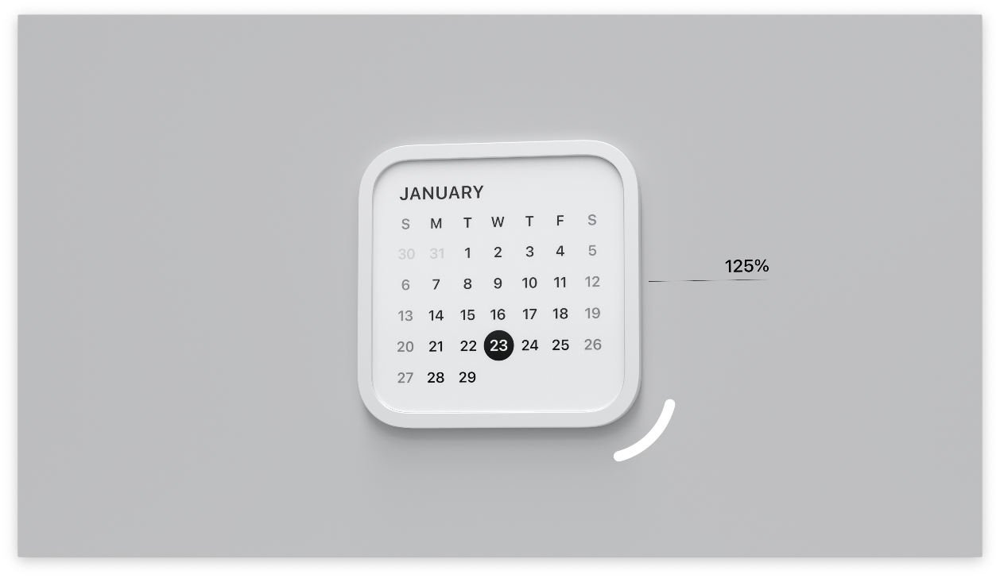

WWDC25 visionOS用Widgetについてのまとめ
visionOS 26 で 空間Widget（ウィジェット） がサポートされましたね！ この記事では空間Widgetでできることをサンプルコードを交えて解説します。
空間Widgetとは
iOSやmacOS同様にWidgetKitで構築したWidgetをvisionOSにも表示できます。
visionOSが他OSと大きく違うのはWidgetを現実世界の机や壁に設置できるところです。 机の上など水平面に設置したWidgetは自動でユーザーのほうに向きます。

Widgetのサイズ
Widgetのサイズは以下５種類から選べます。
- Small 158x158pt
- Medium 354x158pt
- Large 354x354pt
- Extra Large Portrait 354x550pt
- Extra Large Landscape 550x354pt
どのWidgetもユーザーが任意にリサイズ（縦横比は変わらず75%から125%の範囲内で）できます。

どのサイズをサポートするかは従来のiOSなどのWidgetと同様にsupportedFamiliesモディファイアで指定できます。
.supportedFamilies(
[.systemExtraLarge, .systemExtraLargePortrait]
)
素材

visionOSのWidgetは素材が Paper(紙) なのか Glass(ガラス) なのかを指定できます。
Paperは印刷物のようなリアルなあしらいになり、Glassなら前景と背景の間に深みが出ます。
PaperとGlassで周辺環境の明るさによる見え方の違いも出てきます。
素材はwidgetTextureモディファイアで指定できます。
.widgetTexture(.paper)
マウントスタイル
マウントスタイルとして以下２つをユーザーが選択可能です。
- Recessed 埋没したようなスタイル
- Elevated 浮き上がったようなスタイル
壁面に設置する場合はどちらのスタイルも選べますが、机など水平面に設置する場合はElevatedのみです。そのため、マウントスタイルとしてRecessedしかサポートしていない場合、水平面に設置できなくなります。
デフォルトで両方のマウントスタイルをサポートしますが、必要ならsupportedMountingStylesモディファイアでどちらか片方のみに限定できます。
.supportedMountingStyles([.recessed])
距離によるUIの変更

visionOSのWidgetは他OSのWidgetと違い、現実世界に設置されるためユーザーからの距離が遠くなることもあります。
そのため、ユーザーからの距離を検知してUIを変更できます。 例えば、ユーザーが離れたら表示項目を減らしてより大きなフォントで表示するなどです。

距離による切り替えはlevelOfDetail environment variable により可能で、以下２種の値を検知できます。
.defaultデフォルト/距離が近い.simplfied簡易表示/距離が遠い
@Environment(\.levelOfDetail) var levelOfDetail
var body: some View {
VStack {
if levelOfDetail == .simplified {
SimpleView()
} else {
DefaultView()
}
}
}
レンダリングモード

デフォルトではvisionOSのWidgetはフルカラーで表示されますが、ユーザーが特定の色でのアクセントモードやモノクロモードに変更もできます。

具体的には以下３種のレンダリングモードがあります。
.fullColorフルカラー.accented特定の色.vibrantモノクロ
これらのモードへの対応はvisionOSが自動である程度やってくれますが、必要ならアプリごとにカスタマイズできます。
具体的にはwidgetRenderingMode environment variable により振り分けます。
アクセントモード（.accented）では、白や黒で強調表示させたいViewを.widgetAccentableモディファイアで明示できます。
@Environment(\.widgetRenderingMode) var widgetRenderingMode
var body: some View {
ZStack {
switch renderingMode {
case .fullColor:
Text("Full color")
case .accented:
ZStack {
Circle(...)
VStack {
Text("Accented")
.widgetAccentable()
Text("Normal")
}
}
case .vibrant:
Text("Full color")
}
}
}
まとめ
待望の空間Widgetに、たくさんのアプリが対応してくれるのが楽しみですね！

![[WWDC24] SwiftUIの新機能のまとめ](/images/wwdc24-whats-new-in-swiftui/top.jpg)
![[visionOSアプリ練習] SwiftUIアプリで3Dモデルを表示する](/images/visionos-volume-3dmodel/top.png)
![[visionOS] 最もシンプルな完全没入空間を試すサンプルコード](/images/visionos-simplest-full-immersion-space-app/top.png)